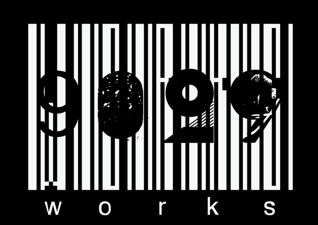

<!DOCTYPE html>
<html lang="ja">
<head>
<meta charset="utf-8">
<meta name="viewport" content="width=device-width, initial-scale=1, maximum-scale=1, viewport-fit=cover">
<meta name="apple-mobile-web-app-status-bar-style" content="black-translucent">
<meta name="mobile-web-app-capable" content="yes">
<link rel="manifest" href="manifest.webmanifest">
<meta name="apple-mobile-web-app-capable" content="yes">
<meta name="apple-mobile-web-app-title" content="9029スクリプト">
<meta name="theme-color" content="#000000">
<link rel="apple-touch-icon" href="icon-180.png">
<link rel="icon" href="icon-192.png">
<title>9029スクリプト</title>
<style>
:root{--bg:#000;--card:#141518;--card2:#0C0D0F;--line:#26282D;--line2:#3A3E45;--tx:#F3F3F1;--sub:#C9CDD3;--mut:#A3A8B0;--ok:#2FD38A;--keep:#F2B134;--ng:#FF6B5E}
*{box-sizing:border-box}
html,body{margin:0;background:var(--bg);color:var(--tx);font-family:-apple-system,'Hiragino Sans','Hiragino Kaku Gothic ProN','Noto Sans JP',system-ui,sans-serif;-webkit-text-size-adjust:100%}
button,input,select{font-family:inherit;color:inherit}
button{cursor:pointer;-webkit-tap-highlight-color:transparent}
.mono{font-family:ui-monospace,'SF Mono',Menlo,monospace}
#app{max-width:480px;margin:0 auto;min-height:100dvh;padding:calc(16px + env(safe-area-inset-top)) calc(16px + env(safe-area-inset-right)) calc(24px + env(safe-area-inset-bottom)) calc(16px + env(safe-area-inset-left));display:flex;flex-direction:column;gap:12px;position:relative}
.top{display:flex;align-items:center;justify-content:space-between;min-height:40px;gap:8px}
.pill{height:38px;padding:0 12px;border:0;border-radius:10px;background:var(--card);color:var(--tx);font-size:13px;display:inline-flex;align-items:center;gap:6px;text-decoration:none}
.pill.out{background:transparent;border:1px solid var(--line)}
.dot{width:8px;height:8px;border-radius:4px;background:var(--keep)}
.h1{font-size:17px;font-weight:700}
.lbl{font-size:11px;color:var(--mut);letter-spacing:.04em}
.sec{font-size:12px;color:var(--mut)}
.card{background:var(--card);border-radius:16px;padding:14px;border:0;text-align:left;width:100%}
.g3{display:grid;grid-template-columns:repeat(3,minmax(0,1fr));gap:8px}
.g2{display:grid;grid-template-columns:repeat(2,minmax(0,1fr));gap:8px}
.box{height:76px;border:0;border-radius:16px;background:var(--card);display:flex;flex-direction:column;align-items:center;justify-content:center}
.big{font-size:30px;font-weight:900;line-height:1.15}
.step{width:34px;height:44px;border:0;background:transparent;color:var(--mut);font-size:24px}
.tcb{height:56px;border:1px solid var(--line);border-radius:14px;background:var(--card2);display:flex;flex-direction:column;align-items:center;justify-content:center;gap:1px}
.tcb b{font-family:ui-monospace,'SF Mono',Menlo,monospace;font-size:14px}
.tile{height:62px;border-radius:14px;background:var(--card);border:1px solid var(--line);display:flex;flex-direction:column;align-items:center;justify-content:center;gap:1px}
.tile b{font-family:ui-monospace,'SF Mono',Menlo,monospace;font-size:19px}
.tile.ch,.frow.ch{border:2px solid var(--keep)}
.chg{color:var(--keep);font-weight:700;margin-left:4px}
.frow{height:48px;border-radius:14px;background:var(--card);border:1px solid var(--line);display:flex;align-items:center;gap:10px;padding:0 14px;width:100%}
.frow span.v{flex:1;text-align:left;font-size:14px;font-weight:700;white-space:nowrap;overflow:hidden;text-overflow:ellipsis}
.sub1{font-size:11px;color:var(--mut);display:flex;gap:10px;flex-wrap:wrap;padding:0 4px}
.st{height:64px;border-radius:18px;font-size:22px;font-weight:900;background:transparent;border:2px solid}
.st.ok{color:var(--ok);border-color:var(--ok)}.st.keep{color:var(--keep);border-color:var(--keep)}.st.ng{color:var(--ng);border-color:var(--ng)}
.st.on{color:#000}.st.ok.on{background:var(--ok)}.st.keep.on{background:var(--keep)}.st.ng.on{background:var(--ng)}
.chips{display:flex;flex-wrap:wrap;gap:6px}
.chip{height:38px;padding:0 13px;border-radius:19px;font-size:14px;border:1px solid var(--line2);background:var(--card)}
.chip.on{border:0;background:var(--ng);color:#000;font-weight:700}
.chip.sel{border:0;background:var(--tx);color:#000;font-weight:700}
.inp{height:48px;width:100%;border:1px solid var(--line2);border-radius:12px;background:var(--card2);color:var(--tx);padding:0 12px;font-size:16px}
.inp::placeholder{color:#7D828A}
.primary{height:58px;border:0;border-radius:16px;background:var(--tx);color:#000;font-size:17px;font-weight:900;width:100%}
.primary:disabled{background:#2A2D33;color:var(--mut)}
.spacer{flex:1}
.badge{font-size:12px;font-weight:900;padding:2px 8px;border-radius:6px;color:#000}
.b-OK{background:var(--ok)}.b-KEEP{background:var(--keep)}.b-NG{background:var(--ng)}
.row{height:56px;border:0;border-radius:14px;background:var(--card);display:flex;align-items:center;gap:12px;padding:0 14px 0 0;overflow:hidden;width:100%;text-align:left}
.row .bar{width:6px;align-self:stretch}
.row .code{font-family:ui-monospace,'SF Mono',Menlo,monospace;font-size:15px;font-weight:700;min-width:58px}
.row .note{flex:1;font-size:13px;color:var(--sub);white-space:nowrap;overflow:hidden;text-overflow:ellipsis}
.grp{font-size:12px;color:var(--mut);padding:6px 2px 0}
.list{border-radius:16px;background:var(--card);overflow:hidden}
.li{height:52px;border:0;border-bottom:1px solid var(--line);background:transparent;display:flex;align-items:center;justify-content:space-between;padding:0 14px;width:100%;font-size:14px;color:var(--tx);text-decoration:none}
.li:last-child{border-bottom:0}
.li .k{color:var(--mut)}.li .v{font-weight:700}
.overlay{position:fixed;inset:0;background:rgba(0,0,0,.65);z-index:10;display:flex;justify-content:center;padding:calc(110px + env(safe-area-inset-top)) 12px 0}
.sheet{position:relative;width:100%;max-width:456px;align-self:flex-start;background:#17191C;border:1px solid var(--line);border-radius:22px;padding:16px;display:flex;flex-direction:column;gap:14px;box-shadow:0 12px 40px rgba(0,0,0,.6);max-height:calc(100dvh - 140px);overflow-y:auto}
.opt{height:48px;border-radius:12px;font-size:15px;border:1px solid var(--line2);background:var(--card2)}
.opt.sel{border:0;background:var(--tx);color:#000;font-weight:700}
.hold{-webkit-user-select:none;user-select:none;-webkit-touch-callout:none;touch-action:manipulation}
.warn{padding:12px 14px;border-radius:14px;background:#2A2418;border:1px solid #5A4A22;color:#E6DCC6;font-size:13px}
.note{font-size:12px;color:var(--mut);line-height:1.6}
.guide p{margin:0}
.guide .card{display:flex;flex-direction:column;gap:6px;font-size:14px;line-height:1.65;color:var(--sub)}
.guide .card b{color:var(--tx);font-size:15px}
.toast{position:fixed;left:50%;bottom:28px;transform:translateX(-50%);background:var(--tx);color:#000;padding:10px 16px;border-radius:12px;font-size:14px;font-weight:700;z-index:20}
.logo{width:150px;height:auto;display:block}
.seg{display:grid;grid-template-columns:1fr 1fr;gap:8px}
.seg button{height:56px;border-radius:14px;border:1px solid var(--line);background:transparent;display:flex;flex-direction:column;align-items:center;justify-content:center}
.seg button.on{border:2px solid var(--keep);background:var(--card)}
.script{border:0;text-align:left;padding:10px 14px;border-radius:14px;background:var(--card);display:flex;flex-direction:column;gap:2px;width:100%}
.script .hd{font-size:15px;font-weight:700}
.script .ln{font-size:13px;color:var(--sub);white-space:nowrap;overflow:hidden;text-overflow:ellipsis}
.sbody{display:flex;flex-direction:column;gap:8px;font-size:15px;line-height:1.75;color:var(--sub)}
.sbody .dl{color:var(--tx)}.sbody .dl b{color:var(--keep);font-weight:700;margin-right:2px}
.sbody .x{text-align:center;color:var(--mut)}
.srow{border:0;border-radius:14px;background:var(--card);display:flex;align-items:center;gap:10px;padding:10px 12px;width:100%;text-align:left}
.srow .no{font-family:ui-monospace,'SF Mono',Menlo,monospace;font-weight:700;font-size:16px;min-width:34px}
.srow .hd{flex:1;font-size:14px;white-space:nowrap;overflow:hidden;text-overflow:ellipsis}
.tag{font-size:11px;font-weight:900;padding:2px 7px;border-radius:6px;white-space:nowrap}
.t-ok{background:var(--ok);color:#000}.t-wip{background:var(--keep);color:#000}.t-none{border:1px solid var(--line2);color:var(--mut)}
</style>
</head>
<body>
<div id="app"></div>
<div id="layer"></div>
<script>
(function(){
'use strict';
var KEY='9029script.v1';
var LENS=['18mm','21mm','24mm','25mm','28mm','35mm','40mm','50mm','75mm','85mm','100mm','135mm','その他'];
var LTYPE=['ZEISS','Simera-C','その他'];
var IRIS=['F1.4','F2','F2.8','F4','F5.6','F8','その他'];
var WB=['3200K','4300K','5000K','5600K','6500K','その他'];
var ND=[['なし','なし'],['0.3','0.3 (ND2)'],['0.6','0.6 (ND4)'],['0.9','0.9 (ND8)'],['1.2','1.2 (ND16)'],['1.5','1.5 (ND32)'],['1.8','1.8 (ND64)'],['2.1','2.1 (ND128)'],['2.4','2.4 (ND256)']];
var REASONS=['芝居','セリフ','カメラワーク','フォーカス','音声','照明','美術・小道具','その他'];
var FPS=['23.976','24','25','29.97','30'];
var FPSR={'23.976':24000/1001,'24':24,'25':25,'29.97':30000/1001,'30':30};
var WK='日月火水木金土';

function uid(p){return (p||'')+Date.now().toString(36)+Math.random().toString(36).slice(2,7);}
function esc(s){return String(s==null?'':s).replace(/[&<>"']/g,function(c){return {'&':'&amp;','<':'&lt;','>':'&gt;','"':'&quot;',"'":'&#39;'}[c];});}
function pad(n){return String(n).padStart(2,'0');}
function today(){var d=new Date();return d.getFullYear()+'-'+pad(d.getMonth()+1)+'-'+pad(d.getDate());}
function fmtDate(s){if(!s)return'';var p=s.split('-');var d=new Date(+p[0],+p[1]-1,+p[2]);return pad(d.getMonth()+1)+'/'+pad(d.getDate())+'('+WK[d.getDay()]+')';}
function nowStamp(){var d=new Date();return pad(d.getMonth()+1)+'/'+pad(d.getDate())+' '+pad(d.getHours())+':'+pad(d.getMinutes());}
function clone(o){return JSON.parse(JSON.stringify(o));}

function defCam(body){return {body:body,lensType:'',lensTypeCustom:'',lens:'35mm',lensCustom:'',iris:'F2.8',irisCustom:'',wb:'5600K',wbCustom:'',nd:'なし',fx:'',iso:'800',shutter:'180°',fps:'24',format:'BRAW'};}
function defaults(){
  var p={id:'p'+uid(),name:'One'};
  return {settings:{projects:[p],projectId:p.id,cams:{A:defCam('URSA Cine 12K LF'),B:defCam('PYXIS 6K')},lastCam:{},activeCam:'A',tc:{},session:null,cur:{scene:'1',cut:'1',take:1},updatedAt:0},days:{}};
}
var D;
try{D=JSON.parse(localStorage.getItem(KEY)||'null');}catch(e){D=null;}
if(!D||!D.settings)D=defaults();
if(!D.scripts)D.scripts={};

var S={view:'home',dayKey:null,scene:'all',editId:null,draft:null,camSel:null,rec:{status:null,reasons:{},memo:'',tcIn:'',tcOut:'',inF:null,outF:null},sheet:null,syncNote:''};

/* ---------- storage + sync ---------- */
var db=null,uidv=null,dirty={},flushT=null;
function persist(docIds){
  try{localStorage.setItem(KEY,JSON.stringify(D));}catch(e){}
  (docIds||[]).forEach(function(k){dirty[k]=1;});
  if(db&&uidv){clearTimeout(flushT);flushT=setTimeout(flush,1200);}
}
function touchSettings(){D.settings.updatedAt=Date.now();persist(['settings']);}
function dayDocId(k){return 'day_'+k.replace(/[^A-Za-z0-9_\-]/g,'_');}
function flush(){
  if(!db||!uidv)return;
  var ks=Object.keys(dirty);dirty={};
  var col=db.collection('data/users/'+uidv);
  (function next(){
    if(!ks.length)return;
    var k=ks.shift(),p;
    if(k==='settings')p=col.doc('settings').set({settings:D.settings,updatedAt:D.settings.updatedAt});
    else if(k.indexOf('script:')===0){var pid=k.slice(7),sc=D.scripts[pid];p=sc?col.doc('script_'+pid).set({pid:pid,script:sc,updatedAt:sc.updatedAt||0}):col.doc('script_'+pid).delete();}
    else{var day=D.days[k];p=day?col.doc(dayDocId(k)).set({key:k,day:day,updatedAt:day.updatedAt}):col.doc(dayDocId(k)).delete();}
    p.then(next,function(e){if(e&&e.code==='quota_exceeded')toast('保存領域がいっぱいです');dirty[k]=1;next();});
  })();
}
/* ---------- helpers ---------- */
function proj(){var s=D.settings;return s.projects.filter(function(p){return p.id===s.projectId;})[0]||s.projects[0];}
function dayKey(date){return D.settings.projectId+'|'+date;}
function projDays(){var pid=D.settings.projectId;return Object.keys(D.days).filter(function(k){return k.indexOf(pid+'|')===0;}).map(function(k){return D.days[k];}).sort(function(a,b){return a.date<b.date?1:-1;});}
function cam(k){return D.settings.cams[k||D.settings.activeCam];}
function shown(c,k){
  if(k==='lens'||k==='iris'||k==='wb'||k==='lensType')return c[k]==='その他'?((c[k+'Custom']||'').trim()||'その他'):(c[k]||'');
  return c[k];
}
function script(){return D.scripts[D.settings.projectId]||null;}
function sceneNum(x){var m=String(x||'').match(/^\d+/);return m?m[0]:null;}
function findScene(x){var sc=script(),n=sceneNum(x);if(!sc||!n)return null;for(var i=0;i<sc.scenes.length;i++)if(sc.scenes[i].no===n)return sc.scenes[i];return null;}
function firstLine(sc){for(var i=0;i<sc.body.length;i++)if(sc.body[i]!=='×')return sc.body[i];return '';}
function sceneStatus(no){var r={takes:0,ok:0};projDays().forEach(function(d){d.takes.forEach(function(t){if(sceneNum(t.scene)===no){r.takes++;if(t.status==='OK')r.ok++;}});});return r;}
function bodyHtml(sc){return sc.body.map(function(p){if(p==='×')return '<div class="x">×　×　×</div>';var m=p.match(/^([^「」（）]{1,8})「([\s\S]*)$/);if(m)return '<div class="dl"><b>'+esc(m[1])+'</b>「'+esc(m[2])+'</div>';return '<div>'+esc(p)+'</div>';}).join('');}
function nextCut(c){var m=String(c).match(/^(\d+)/);return m?String(parseInt(m[1],10)+1):String(c);}
function ndLabel(v){for(var i=0;i<ND.length;i++)if(ND[i][0]===v)return ND[i][1];return v;}
function filterText(c){return 'ND '+ndLabel(c.nd)+((c.fx||'').trim()?' ・ '+c.fx.trim():'');}
function camSnap(k){var c=cam(k);return {cam:k,body:c.body,lensType:shown(c,'lensType'),lens:shown(c,'lens'),iris:shown(c,'iris'),wb:shown(c,'wb'),nd:ndLabel(c.nd),fx:(c.fx||'').trim(),iso:c.iso,shutter:c.shutter,fps:c.fps,format:c.format};}

/* TC */
function base(f){return Math.round(FPSR[f]||24);}
function tcFrames(k){
  var c=cam(k),f=c.fps,b=base(f),sy=D.settings.tc[k],now=Date.now(),day=86400*b,fr;
  if(sy&&sy.fps===f){fr=sy.F0+(now-sy.t0)/1000*FPSR[f];}
  else{var d=new Date();fr=((d.getHours()*60+d.getMinutes())*60+d.getSeconds()+d.getMilliseconds()/1000)*b;}
  fr=Math.floor(fr)%day;if(fr<0)fr+=day;return fr;
}
function fmtTC(fr,f){var b=base(f),ff=fr%b,s=Math.floor(fr/b),h=Math.floor(s/3600)%24,m=Math.floor(s/60)%60;return pad(h)+':'+pad(m)+':'+pad(s%60)+':'+pad(ff);}
function parseTC(str,f){
  var d=tcDigits(str);if(d.length===6)d+='00';if(d.length!==8)return null;
  var h=+d.slice(0,2),m=+d.slice(2,4),s=+d.slice(4,6),ff=+d.slice(6,8),b=base(f);
  if(h>23||m>59||s>59||ff>=b)return null;return ((h*60+m)*60+s)*b+ff;
}
function tcDigits(str){return String(str||'').replace(/[\uFF10-\uFF19]/g,function(c){return String.fromCharCode(c.charCodeAt(0)-0xFEE0);}).replace(/[^0-9]/g,'').slice(0,8);}
function tcFormat(d){return (d.match(/.{1,2}/g)||[]).join(':');}
function durOf(t){if(t.inF==null||t.outF==null)return'';var b=base(t.fps||'24'),d=t.outF-t.inF;if(d<0)d+=86400*b;var s=Math.round(d/b);return Math.floor(s/60)+':'+pad(s%60);}
function syncAge(k){var sy=D.settings.tc[k];if(!sy)return null;return (Date.now()-sy.t0)/3600000;}

function toast(msg){var el=document.createElement('div');el.className='toast';el.textContent=msg;document.body.appendChild(el);setTimeout(function(){el.remove();},1800);}

/* ---------- views ---------- */
var app=document.getElementById('app'),layer=document.getElementById('layer');

function vHome(){
  var days=projDays(),total=0;days.forEach(function(d){total+=d.takes.length;});
  var ses=D.settings.session,sesOn=ses&&ses.projectId===D.settings.projectId;
  var h='<div class="top"><div style="display:flex;gap:8px"><button class="pill" data-go="script">台本</button><button class="pill" data-go="camera">カメラ</button><button class="pill" data-go="guide">使い方</button></div></div>';
  h+='<div style="font-size:13px;font-weight:700;letter-spacing:.06em">9029スクリプト</div>';
  h+='<button class="card" data-act="projects" style="display:flex;justify-content:space-between;align-items:center"><span><span class="lbl">プロジェクト</span><br><span style="font-size:26px;font-weight:900">'+esc(proj().name)+'</span></span><span class="sec">切替 ▾</span></button>';
  h+='<div class="sec" style="display:flex;gap:14px"><span>撮影日数 <b style="color:var(--tx)">'+days.length+'</b></span><span>総テイク <b style="color:var(--tx)">'+total+'</b></span></div>';
  if(sesOn)h+='<button class="card" data-go="record" style="border:2px solid var(--keep);display:flex;justify-content:space-between;align-items:center"><span><span class="lbl">撮影中</span><br><b style="font-size:18px">'+fmtDate(ses.date)+'　S'+esc(D.settings.cur.scene)+'-C'+esc(D.settings.cur.cut)+'-T'+D.settings.cur.take+'</b></span><span style="font-weight:700">記録に戻る ›</span></button>';
  h+='<div class="sec">撮影ログ</div>';
  if(days.length)h+='<div class="note" style="margin-top:-6px">カードを長押しすると撮影日ごと削除できます</div>';
  if(!days.length)h+='<div class="card note">まだ記録がありません。下の「新しい撮影を始める」から記録を始めてください。</div>';
  days.forEach(function(d){
    var c={OK:0,KEEP:0,NG:0},sc=[],cams={};
    d.takes.forEach(function(t){c[t.status]=(c[t.status]||0)+1;if(sc.indexOf(t.scene)<0)sc.push(t.scene);cams[t.cam]=1;});
    h+='<button class="card hold" data-day="'+esc(dayKey(d.date))+'" style="display:flex;flex-direction:column;gap:8px"><span style="display:flex;justify-content:space-between;align-items:baseline;width:100%"><b style="font-size:18px">'+fmtDate(d.date)+'</b><span class="sec">'+d.takes.length+' テイク</span></span><span style="font-size:13px;color:var(--sub)">'+esc(sc.map(function(s){return 'S'+s;}).join(' ・ '))+'</span><span style="display:flex;gap:6px;align-items:center;width:100%"><span class="badge b-OK">OK '+c.OK+'</span><span class="badge b-KEEP">保留 '+c.KEEP+'</span><span class="badge b-NG">NG '+c.NG+'</span><span class="mono sec" style="margin-left:auto">'+Object.keys(cams).sort().map(function(k){return k+' CAM';}).join(' ／ ')+'</span></span></button>';
  });
  h+='<div class="spacer"></div><button class="primary" data-act="newShoot" style="position:sticky;bottom:12px;height:64px;font-size:18px">＋ 新しい撮影を始める</button>';
  return h;
}

function vRecord(){
  var s=D.settings,k=s.activeCam,c=cam(),pv=s.lastCam[k]||null,r=S.rec,ses=s.session;
  function ch(key){if(!pv)return false;if(key==='lens'&&shown(c,'lensType')!==shown(pv,'lensType'))return true;return key==='filter'?(c.nd!==pv.nd||(c.fx||'').trim()!==(pv.fx||'').trim()):shown(c,key)!==shown(pv,key);}
  var age=syncAge(k);
  var h='<div class="top"><div style="display:flex;align-items:center;gap:8px"><button class="pill out" data-go="home" style="font-weight:700">‹ ホーム</button><button class="pill out" data-act="editDate" style="font-weight:700">撮影 '+fmtDate(ses?ses.date:today())+' ▾</button></div><div style="display:flex;gap:8px"><button class="pill" data-day="'+esc(dayKey(ses?ses.date:today()))+'">一覧</button><button class="pill" data-act="swapCam" style="font-weight:700"><span class="dot" style="background:'+(k==='A'?'var(--keep)':'#6FA8FF')+'"></span>'+k+' CAM</button></div></div>';
  h+='<div class="g3"><button class="box" data-act="editScene"><span class="lbl">シーン</span><span class="big">'+esc(s.cur.scene)+'</span></button><button class="box" data-act="editCut"><span class="lbl">カット</span><span class="big">'+esc(s.cur.cut)+'</span></button><div class="box"><span class="lbl">テイク</span><span style="display:flex;align-items:center"><button class="step" data-act="takeMinus" aria-label="テイクを減らす">−</button><span class="big" style="min-width:26px;text-align:center">'+s.cur.take+'</span><button class="step" data-act="takePlus" aria-label="テイクを増やす">+</button></span></div></div>';
  var scn=findScene(s.cur.scene);
  if(scn)h+='<button class="script" data-scn="'+scn.no+'"><span style="display:flex;justify-content:space-between;align-items:baseline;width:100%"><span class="hd">'+esc(scn.no+'　'+scn.head)+'</span><span class="lbl">台本 p.'+scn.page+'</span></span><span class="ln">'+esc(firstLine(scn))+'</span></button>';
  else h+='<button class="script" data-go="script"><span class="ln">'+(script()?'台本にシーン'+esc(s.cur.scene)+'がありません':'台本が未読み込みです（タップで読み込み）')+'</span></button>';
  h+='<div class="g3"><button class="tcb" data-act="tcIn"><span class="lbl">TC IN</span><b>'+(r.tcIn||'--:--:--:--')+'</b></button><button class="tcb" data-act="tcOut"><span class="lbl">TC OUT</span><b>'+(r.tcOut||'--:--:--:--')+'</b></button><button class="tcb" data-go="tcsync"><span class="lbl">'+(age==null?'<span style="color:var(--keep)">TC未同期</span>':age>4?'<span style="color:var(--keep)">要再同期</span>':'尺')+'</span><b>'+(durOf({inF:r.inF,outF:r.outF,fps:c.fps})||'--:--')+'</b></button></div>';
  h+='<div class="g3">'+[['lens','レンズ'],['iris','絞り'],['wb','WB']].map(function(x){return '<button class="tile'+(ch(x[0])?' ch':'')+'" data-pick="'+x[0]+'"><span class="lbl">'+x[1]+(ch(x[0])?'<span class="chg">変更</span>':'')+'</span><b>'+esc(shown(c,x[0]))+'</b>'+(x[0]==='lens'&&shown(c,'lensType')?'<span class="lbl" style="max-width:100%;padding:0 4px;white-space:nowrap;overflow:hidden;text-overflow:ellipsis">'+esc(shown(c,'lensType'))+'</span>':'')+'</button>';}).join('')+'</div>';
  h+='<button class="frow'+(ch('filter')?' ch':'')+'" data-pick="filter"><span class="lbl" style="min-width:52px">フィルター</span><span class="v">'+esc(filterText(c))+'</span>'+(ch('filter')?'<span class="chg" style="font-size:11px">変更</span>':'')+'</button>';
  h+='<div class="sub1 mono"><span>'+esc(c.body)+'</span><span>ISO '+esc(c.iso)+'</span><span>'+esc(c.shutter)+'</span><span>'+esc(c.fps)+'fps</span></div>';
  h+='<div class="g3"><button class="st ok'+(r.status==='OK'?' on':'')+'" data-st="OK">OK</button><button class="st keep'+(r.status==='KEEP'?' on':'')+'" data-st="KEEP">保留</button><button class="st ng'+(r.status==='NG'?' on':'')+'" data-st="NG">NG</button></div>';
  if(r.status==='NG')h+='<div class="chips">'+REASONS.map(function(x){return '<button class="chip'+(r.reasons[x]?' on':'')+'" data-reason="'+x+'">'+x+'</button>';}).join('')+'</div>';
  h+='<input class="inp" data-bind="rec.memo" value="'+esc(r.memo)+'" placeholder="メモ（芝居・繋がり）" aria-label="メモ">';
  h+='<div class="spacer"></div><button class="primary" data-act="commit"'+(r.status?'':' disabled')+'>'+(r.status==='OK'?'記録して C'+nextCut(s.cur.cut)+'-T1 へ':r.status?'記録して T'+(s.cur.take+1)+' へ':'OK／保留／NG を選んでください')+'</button>';
  return h;
}

function vDay(){
  var day=D.days[S.dayKey];
  var h='<div class="top"><button class="pill" data-go="home">‹ ホーム</button><span class="h1">'+(day?fmtDate(day.date):'')+'</span><button class="pill" data-act="export">書き出し</button></div>';
  if(!day||!day.takes.length){return h+'<div class="card note">この日の記録はまだありません。</div>'+(D.settings.session?'<button class="primary" data-go="record">記録画面へ</button>':'');}
  var scenes=[];day.takes.forEach(function(t){if(scenes.indexOf(t.scene)<0)scenes.push(t.scene);});
  h+='<div class="chips"><button class="chip'+(S.scene==='all'?' sel':'')+'" data-scene="all">すべて</button>'+scenes.map(function(x){return '<button class="chip'+(S.scene===x?' sel':'')+'" data-scene="'+esc(x)+'">S'+esc(x)+'</button>';}).join('')+'</div>';
  var ts=day.takes.filter(function(t){return S.scene==='all'||t.scene===S.scene;}).slice().sort(function(a,b){return b.createdAt-a.createdAt;});
  var c={OK:0,KEEP:0,NG:0};ts.forEach(function(t){c[t.status]++;});
  h+='<div class="sec" style="display:flex;gap:12px"><span><b style="color:var(--ok)">OK</b> '+c.OK+'</span><span><b style="color:var(--keep)">保留</b> '+c.KEEP+'</span><span><b style="color:var(--ng)">NG</b> '+c.NG+'</span><span style="margin-left:auto">タップで編集</span></div>';
  var last='';
  ts.forEach(function(t){
    var g='S'+t.scene+'　C'+t.cut;
    if(g!==last){h+='<div class="grp">'+esc(g)+'</div>';last=g;}
    var col={OK:'var(--ok)',KEEP:'var(--keep)',NG:'var(--ng)'}[t.status];
    var note=[(t.reasons||[]).join('・'),t.memo].filter(Boolean).join(' ／ ');
    h+='<button class="row" data-edit="'+t.id+'"><span class="bar" style="background:'+col+'"></span><span class="code">'+esc(t.cut)+'-'+t.take+'</span><span class="badge b-'+t.status+'" style="min-width:40px;text-align:center">'+({OK:'OK',KEEP:'保留',NG:'NG'}[t.status])+'</span><span class="note">'+esc(note||((t.lensType?t.lensType+' ':'')+t.lens+' '+t.iris+' '+(t.nd&&t.nd!=='なし'?'ND '+t.nd:'NDなし')))+(t.history&&t.history.length?' <span style="color:var(--keep)">修正済</span>':'')+'</span><span class="mono sec">'+durOf(t)+'</span></button>';
  });
  return h;
}

function vEdit(){
  var d=S.draft;if(!d)return '';
  function f(key,label,mono){return '<label style="display:flex;flex-direction:column;gap:4px"><span class="lbl">'+label+'</span><input class="inp'+(mono?' mono':'')+'" data-bind="draft.'+key+'" value="'+esc(d[key])+'"></label>';}
  var h='<div class="top"><button class="pill" data-back="day">‹ 一覧</button><span class="h1">テイク編集</span><span class="sec">撮影 '+fmtDate(d.date)+'</span></div>';
  h+='<div class="g3">'+f('scene','シーン')+f('cut','カット')+f('take','テイク')+'</div>';
  h+='<div class="g3"><button class="st ok'+(d.status==='OK'?' on':'')+'" data-dst="OK" style="height:56px">OK</button><button class="st keep'+(d.status==='KEEP'?' on':'')+'" data-dst="KEEP" style="height:56px">保留</button><button class="st ng'+(d.status==='NG'?' on':'')+'" data-dst="NG" style="height:56px">NG</button></div>';
  if(d.status==='NG')h+='<div class="chips">'+REASONS.map(function(x){return '<button class="chip'+(d.reasons.indexOf(x)>=0?' on':'')+'" data-dreason="'+x+'">'+x+'</button>';}).join('')+'</div>';
  h+='<div class="g2">'+f('tcIn','TC IN',1)+f('tcOut','TC OUT',1)+'</div>';
  h+='<div class="g2">'+f('lensType','レンズ種類')+f('lens','焦点距離',1)+'</div>';
  h+='<div class="g2">'+f('iris','絞り',1)+f('wb','WB',1)+'</div>';
  h+='<div style="display:grid;grid-template-columns:1fr 2fr;gap:8px">'+f('nd','ND',1)+f('fx','エフェクト')+'</div>';
  h+=f('memo','メモ');
  h+='<div class="note">記録 '+esc(d.createdLabel||'')+' ・ '+esc(d.cam)+' CAM'+(d.history&&d.history.length?'<br><span style="color:var(--keep)">修正 '+d.history.length+' 回（最終 '+esc(d.history[d.history.length-1].at)+'）・元の記録は履歴に残っています</span>':'')+'</div>';
  h+='<div class="spacer"></div><div style="display:grid;grid-template-columns:1fr 2fr;gap:8px"><button class="hold" id="holdDel" style="height:56px;border:1px solid var(--ng);border-radius:16px;background:transparent;color:var(--ng);font-size:14px;font-weight:700">長押しで削除</button><button class="hold" id="holdSave" style="height:56px;border:0;border-radius:16px;font-size:16px;font-weight:900;background:var(--tx);color:#000">長押しで保存（2秒）</button></div>';
  return h;
}

function vCamera(){
  var k=S.camSel||D.settings.activeCam,c=cam(k),cams=D.settings.cams;
  var h='<div class="top"><button class="pill" data-back="1">‹ 戻る</button><span class="h1">カメラ設定</span><span style="width:60px"></span></div>';
  h+='<div class="seg">'+['A','B'].map(function(x){return '<button class="'+(x===k?'on':'')+'" data-camsel="'+x+'"><b style="font-size:18px">'+x+' CAM</b><span class="lbl">'+esc(cams[x].body)+'</span></button>';}).join('')+'</div>';
  h+='<div class="sec">よく変える（記録画面からも変更可）</div><div class="g3">'+[['lens','レンズ'],['iris','絞り'],['wb','WB']].map(function(x){return '<button class="tile" data-pick="'+x[0]+'" style="height:72px"><span class="lbl">'+x[1]+'</span><b>'+esc(shown(c,x[0]))+'</b>'+(x[0]==='lens'&&shown(c,'lensType')?'<span class="lbl">'+esc(shown(c,'lensType'))+'</span>':'')+'</button>';}).join('')+'</div>';
  h+='<div class="sec">フィルター</div><div class="list"><button class="li" data-pick="filter"><span class="k">ND</span><span class="v mono">'+esc(ndLabel(c.nd))+'</span></button><button class="li" data-pick="filter"><span class="k">エフェクト</span><span class="v">'+esc((c.fx||'').trim()||'なし')+'</span></button></div>';
  h+='<div class="sec">基本設定</div><div class="list">'+[['body','ボディ'],['iso','ISO'],['shutter','シャッター'],['fps','fps'],['format','収録形式']].map(function(x){return '<button class="li" data-field="'+x[0]+'"><span class="k">'+x[1]+'</span><span class="v mono">'+esc(c[x[0]])+(x[0]==='fps'?' fps':'')+'</span></button>';}).join('')+'</div>';
  h+='<div class="list"><button class="li" data-go="tcsync"><span class="v">TC合わせ</span><span class="k">'+(D.settings.tc[k]?'最終 '+esc(D.settings.tc[k].at):'未同期')+' ›</span></button></div>';
  h+='<div class="spacer"></div><button class="primary" data-act="useCam">'+k+' CAM で記録する</button>';
  return h;
}

function vTcSync(){
  var k=S.camSel||D.settings.activeCam,c=cam(k),sy=D.settings.tc[k],age=syncAge(k);
  var h='<div class="top"><button class="pill" data-back="1">‹ 戻る</button><span class="h1">TC合わせ</span><button class="pill" data-go="guide">使い方</button></div>';
  h+='<div class="seg">'+['A','B'].map(function(x){return '<button class="'+(x===k?'on':'')+'" data-camsel="'+x+'"><b style="font-size:18px">'+x+' CAM</b><span class="lbl">'+esc(D.settings.cams[x].fps)+' fps</span></button>';}).join('')+'</div>';
  h+='<div class="card" style="text-align:center"><div class="lbl">アプリのTC（'+k+' CAM）</div><div class="mono" id="liveTC" style="font-size:38px;font-weight:700;margin-top:4px">'+fmtTC(tcFrames(k),c.fps)+'</div><div class="sec" style="margin-top:4px">'+(sy?'最終同期 '+esc(sy.at)+'（'+(age<1?Math.round(age*60)+'分前':age.toFixed(1)+'時間前')+'）':'<span style="color:var(--keep)">未同期：iPhoneの時計そのままです</span>')+'</div></div>';
  if(age!=null&&age>4)h+='<div class="warn">前回の同期から4時間以上たっています。合わせ直してください。</div>';
  h+='<div class="sec">① カメラのfpsに合わせる（23.976と24は別物です）</div><div class="chips">'+FPS.map(function(f){return '<button class="chip'+(c.fps===f?' sel':'')+'" data-tcfps="'+f+'">'+f+'</button>';}).join('')+'</div>';
  h+='<label style="display:flex;flex-direction:column;gap:6px"><span class="sec">② カメラの表示より<b style="color:var(--tx)">数秒先</b>のTCを入れる（時分秒の6桁だけでもOK）</span><input class="inp mono" id="camTC" inputmode="numeric" autocomplete="off" placeholder="例 20:14:30:00" value="'+esc(S.tcDraft||'')+'" style="font-size:24px;height:58px;text-align:center"></label>';
  h+='<div class="sec">③ カメラの表示がその値になった瞬間に押す</div><button class="primary" data-act="tcNow" style="height:72px;font-size:22px">今</button>';
  h+='<div class="sec" style="margin-top:4px">④ 上のアプリのTCとカメラを見比べて、ずれていたら微調整</div><div class="g3">'+[[-24*60,'−1分'],[-24,'−1秒'],[-1,'−1f'],[1,'+1f'],[24,'+1秒'],[24*60,'+1分']].map(function(x){return '<button class="opt mono" data-nudge="'+x[0]+'">'+x[1]+'</button>';}).join('')+'</div>';
  h+='<div class="note">合わせた後は、記録画面のTC IN／OUTにこの値が使われます。'+(sy?'<br><button class="pill out" data-act="tcClear" style="margin-top:8px">同期を解除</button>':'')+'</div>';
  return h;
}
function vScript(){
  var sc=script(),h='<div class="top"><button class="pill" data-back="1">‹ 戻る</button><span class="h1">台本</span><span style="width:60px"></span></div>';
  if(!sc){
    h+='<div class="card note" style="font-size:14px;color:var(--sub)">'+esc(proj().name)+' の台本がまだ読み込まれていません。</div>';
    h+='<label class="pill out" style="justify-content:center;height:52px">台本データ（.json）を読み込む<input type="file" accept=".json,application/json" id="scriptFile" style="display:none"></label>';
    h+='<div class="note">台本データ（.json）は、台本をシーンごとに整理したファイルです。受け取ったファイルを「ファイル」アプリなどに保存してから選んでください。読み込んだ台本はこのiPhoneの中だけに保存されます。</div>';
    return h;
  }
  var f=S.sfilter||'all',shot=0;sc.scenes.forEach(function(x){if(sceneStatus(x.no).takes)shot++;});
  h+='<div class="card" style="display:flex;justify-content:space-between;align-items:center"><span><b style="font-size:17px">'+esc(sc.title)+'</b><br><span class="sec">'+esc(sc.draft||'')+' ・ 全'+sc.scenes.length+'シーン ・ 撮影済 '+shot+'</span></span><button class="pill out" data-act="unloadScript">差し替え</button></div>';
  h+='<div class="chips">'+[['all','すべて'],['none','未撮影'],['wip','OKなし'],['ok','OKあり']].map(function(x){return '<button class="chip'+(f===x[0]?' sel':'')+'" data-sf="'+x[0]+'">'+x[1]+'</button>';}).join('')+'</div>';
  sc.scenes.forEach(function(x){
    var st=sceneStatus(x.no),k=st.ok?'ok':st.takes?'wip':'none';
    if(f!=='all'&&f!==k)return;
    h+='<button class="srow" data-scn="'+x.no+'"><span class="no">'+x.no+'</span><span class="hd">'+esc(x.head)+'</span>'+(k==='ok'?'<span class="tag t-ok">OK '+st.ok+'</span>':k==='wip'?'<span class="tag t-wip">'+st.takes+'テイク</span>':'<span class="tag t-none">未撮影</span>')+'<span class="lbl">p.'+x.page+'</span></button>';
  });
  return h;
}
function loadScriptObj(o){
  if(!o||!o.scenes||!o.scenes.length||!o.scenes[0].no){toast('台本データの形式が違います');return;}
  o.updatedAt=Date.now();D.scripts[D.settings.projectId]=o;persist(['script:'+D.settings.projectId]);render();toast('台本を読み込みました（'+o.scenes.length+'シーン）');
}
function vGuide(){
  return '<div class="top"><button class="pill" data-back="1">‹ 戻る</button><span class="h1">TCの合わせ方</span><span style="width:60px"></span></div><div class="guide" style="display:flex;flex-direction:column;gap:12px">'+
  '<p class="note" style="font-size:14px;color:var(--sub)">このアプリのTCは「iPhoneの時計＋カメラとのずれ」で出しています。一度合わせれば、ネットがなくても記録できます。</p>'+
  '<div class="card"><b>1. カメラ側の準備</b>TCを時刻で常に進むモード（フリーラン／タイムオブデイ）にしておく。録画中だけ進むモード（レックラン）では合いません。</div>'+
  '<div class="card"><b>2. アプリで合わせる</b>① 「TC合わせ」でfpsをカメラと同じにする<br>② カメラの表示より数秒先のTCを入れる（例：表示が20:14:25なら 20:14:30）。時分秒の6桁だけでもOK<br>③ カメラの表示がその値になった瞬間に「今」を押す<br>④ アプリのTCとカメラを見比べ、ずれていれば「±1秒」「±1f」で微調整<span class="note">押すタイミングの分、数フレームずれることがあります。毎テイクのカチンコと合わせて使えば、記録とクリップの照合には十分です。</span></div>'+
  '<div class="card"><b>3. もっと正確にしたいとき</b>Tentacle Sync や Deity TC-1 などのTCジェネレーターで、全カメラと録音機を同じTCに揃える（ジャムシンク）。そのジェネレーターの表示に対して、2の手順で合わせます。</div>'+
  '<div class="warn" style="line-height:1.7"><b style="color:var(--keep);font-size:15px">合わせ直すタイミング</b><br>・撮影の始まり（毎朝）<br>・バッテリー交換や電源を入れ直したあと（カメラによってはTCがリセットされることがある）<br>・長時間たったとき（数時間で数フレームずつずれていく）</div>'+
  '<div class="card"><b>fpsに注意</b>カメラが23.976fpsで回っている場合、そのTCは実際の時刻より1時間に約3.6秒遅れていきます。アプリのfpsをカメラと同じにしておけば、この遅れも計算に入ります。</div>'+
  '<div class="card"><b>2台で撮る日</b>A CAM・B CAMそれぞれで合わせます。ジェネレーターで揃えてあれば、同じ値で2回合わせるだけです。</div>'+
  '<div class="card"><b>記録の保存について</b>記録と台本はこのiPhoneの中だけに保存されます（サーバーには送られません）。一度開いたあとは、電波がなくても起動・記録できます。<br>iPhoneの故障や機種変更に備えて、撮影日の終わりにバックアップを取ってください。</div>'+
  '<div class="card"><b>データのバックアップ</b><span>全プロジェクトの記録・カメラ設定・台本をまとめて1つのファイルにします。別のiPhoneで「読み込む」と同じ状態に戻せます（読み込むと今のデータは置き換わります）。</span><div class="g2" style="margin-top:6px"><button class="opt" data-act="backup">書き出す</button><label class="opt" style="display:flex;align-items:center;justify-content:center">読み込む<input type="file" accept=".json,application/json" id="restoreFile" style="display:none"></label></div></div></div>';
}

/* ---------- sheets ---------- */
function openSheet(s){S.sheet=s;renderSheet();}
function closeSheet(){S.sheet=null;layer.innerHTML='';render();}
function renderSheet(){
  var s=S.sheet;if(!s){layer.innerHTML='';return;}
  var body='',title='';
  if(s.type==='pick'){
    var k=s.cam,c=cam(k),key=s.key;
    if(key==='filter'){
      title='フィルター（'+k+' CAM）';
      body='<div class="sec">ND（濃度／丸型フィルター表記）</div><div class="g3">'+ND.map(function(x){return '<button class="opt'+(c.nd===x[0]?' sel':'')+'" data-opt="nd" data-val="'+x[0]+'">'+x[1]+'</button>';}).join('')+'</div>';
      body+='<label style="display:flex;flex-direction:column;gap:8px"><span class="sec">エフェクト（自由記入）</span><input class="inp" data-cbind="fx" value="'+esc(c.fx)+'" placeholder="例：ブラックプロミスト 1/4 ＋ PL"></label>';
    }else{
      title={lens:'レンズ',iris:'絞り',wb:'ホワイトバランス'}[key]+'（'+k+' CAM）';
      var L={lens:LENS,iris:IRIS,wb:WB}[key];
      body='';
      if(key==='lens'){body+='<div class="sec">種類</div><div class="g3">'+LTYPE.map(function(v){return '<button class="opt'+(c.lensType===v?' sel':'')+'" data-opt="lensType" data-val="'+v+'">'+v+'</button>';}).join('')+'</div>';
        if(c.lensType==='その他')body+='<input class="inp" data-cbind="lensTypeCustom" value="'+esc(c.lensTypeCustom||'')+'" placeholder="例：Cooke S4/i">';
        body+='<div class="sec">焦点距離</div>';}
      body+='<div class="g3">'+L.map(function(v){return '<button class="opt'+(c[key]===v?' sel':'')+'" data-opt="'+key+'" data-val="'+v+'">'+v+'</button>';}).join('')+'</div>';
      if(c[key]==='その他')body+='<label style="display:flex;flex-direction:column;gap:8px"><span class="sec">'+{lens:'レンズ',iris:'絞り',wb:'WB'}[key]+'（自由記入）</span><input class="inp" data-cbind="'+key+'Custom" value="'+esc(c[key+'Custom'])+'" placeholder="'+{lens:'例：ズーム 32mm',iris:'例：F3.5',wb:'例：4800K ／ Tint +5'}[key]+'"></label>';
    }
  }else if(s.type==='text'){
    title=s.title;
    if(s.options)body='<div class="g3">'+s.options.map(function(v){return '<button class="opt'+(s.value===v?' sel':'')+'" data-topt="'+esc(v)+'">'+esc(v)+'</button>';}).join('')+'</div>';
    else body='<input class="inp" id="sheetInput" value="'+esc(s.value)+'" style="font-size:22px;height:56px">';
    if(s.target==='cur'&&s.key==='scene'&&script())body+='<div class="sec">台本から選ぶ（16Bのように枝番を付けるときは上の欄で直してください）</div><div style="display:flex;flex-direction:column;gap:6px;max-height:300px;overflow-y:auto">'+script().scenes.map(function(x){return '<button class="srow" data-topt="'+x.no+'" style="background:var(--card2)"><span class="no">'+x.no+'</span><span class="hd">'+esc(x.head)+'</span></button>';}).join('')+'</div>';
  }else if(s.type==='scene'){
    var scc=script(),sx=null,ix=-1;if(scc)scc.scenes.forEach(function(q,i){if(q.no===s.no){sx=q;ix=i;}});
    if(!sx){layer.innerHTML='';return;}
    title='シーン'+sx.no;
    body='<div><div style="font-size:17px;font-weight:900">'+esc(sx.head)+'</div><div class="sec">台本 p.'+sx.page+'</div></div><div class="sbody">'+bodyHtml(sx)+'</div>';
    body+='<div class="g2"><button class="opt" data-scn="'+(ix>0?scc.scenes[ix-1].no:sx.no)+'"'+(ix>0?'':' disabled')+'>‹ 前のシーン</button><button class="opt" data-scn="'+(ix<scc.scenes.length-1?scc.scenes[ix+1].no:sx.no)+'"'+(ix<scc.scenes.length-1?'':' disabled')+'>次のシーン ›</button></div>';
    if(D.settings.session&&sceneNum(D.settings.cur.scene)!==sx.no)body+='<button class="primary" data-usescn="'+sx.no+'">このシーンを記録する</button>';
  }else if(s.type==='sesDate'){
    title='撮影日を変更';
    body='<input class="inp" type="date" id="sesDateInp" value="'+esc(s.value)+'" style="font-size:20px;height:56px">';
    body+='<div class="note">これから記録するテイクの撮影日が変わります。すでに記録したテイクの日付は変わりません。深夜0時をまたいだ撮影では、前の日のままにしておけます。</div>';
  }else if(s.type==='projects'){
    title='プロジェクト';
    body='<div style="display:flex;flex-direction:column;gap:8px">'+D.settings.projects.map(function(p){return '<button class="opt'+(p.id===D.settings.projectId?' sel':'')+'" data-proj="'+p.id+'" style="text-align:left;padding:0 14px">'+esc(p.name)+'</button>';}).join('')+'</div>';
    body+='<label style="display:flex;flex-direction:column;gap:8px"><span class="sec">新しいプロジェクト</span><input class="inp" id="newProj" placeholder="作品名"></label><button class="pill out" data-act="addProj" style="justify-content:center;height:44px">追加する</button>';
    body+='<label style="display:flex;flex-direction:column;gap:8px"><span class="sec">今のプロジェクト名を変更</span><input class="inp" id="renProj" value="'+esc(proj().name)+'"></label><button class="pill out" data-act="renProj" style="justify-content:center;height:44px">名前を変更</button>';
  }else if(s.type==='newShoot'){
    title='新しい撮影を始める';
    body='<label style="display:flex;flex-direction:column;gap:6px"><span class="sec">撮影日</span><input class="inp" type="date" id="nsDate" value="'+esc(s.date)+'"></label>';
    body+='<div class="sec">使うカメラ</div><div class="g2">'+['A','B'].map(function(x){return '<button class="opt'+(s.cams[x]?' sel':'')+'" data-nscam="'+x+'">'+x+' CAM</button>';}).join('')+'</div>';
    body+='<div class="g3"><label style="display:flex;flex-direction:column;gap:6px"><span class="sec">シーン</span><input class="inp" id="nsScene" value="'+esc(s.scene)+'"></label><label style="display:flex;flex-direction:column;gap:6px"><span class="sec">カット</span><input class="inp" id="nsCut" value="'+esc(s.cut)+'"></label><label style="display:flex;flex-direction:column;gap:6px"><span class="sec">テイク</span><input class="inp" id="nsTake" inputmode="numeric" value="'+esc(s.take)+'"></label></div>';
    body+='<button class="primary" data-act="startShoot">記録を始める</button>';
  }else if(s.type==='export'){
    title='書き出し';
    body='<div class="note">CSV（表計算・DaVinciでの照合用）です。「ファイルで保存・共有」でファイルアプリやLINEなどに送れます。「コピー」で文字として貼り付けることもできます。</div><textarea class="inp mono" id="csvText" style="height:180px;padding:10px;font-size:11px" readonly>'+esc(s.csv)+'</textarea><div class="g2"><button class="opt" data-act="saveCsv">ファイルで保存・共有</button><button class="opt" data-act="copyCsv">コピー</button></div>';
  }
  var done=(s.type==='text'||s.type==='pick'||s.type==='projects'||s.type==='sesDate')?'<button class="pill" data-act="sheetDone" style="background:var(--tx);color:#000;font-weight:700;height:40px">決定</button>':'<button class="pill" data-act="sheetClose" style="height:40px">閉じる</button>';
  layer.innerHTML='<div class="overlay" data-act="sheetBg"><div class="sheet" data-stop="1"><div style="display:flex;justify-content:space-between;align-items:center"><span class="h1">'+title+'</span>'+done+'</div>'+body+'</div></div>';
  var si=document.getElementById('sheetInput');if(si)setTimeout(function(){si.focus();si.select();},50);
}

/* ---------- render ---------- */
var liveTimer=null;
function render(){
  var v=S.view,h;
  if(v==='record'&&!D.settings.session)v=S.view='home';
  h={home:vHome,record:vRecord,day:vDay,edit:vEdit,camera:vCamera,tcsync:vTcSync,guide:vGuide,script:vScript}[v]();
  app.innerHTML=h;
  clearInterval(liveTimer);
  if(v==='tcsync'){liveTimer=setInterval(function(){var el=document.getElementById('liveTC');var k=S.camSel||D.settings.activeCam;if(el)el.textContent=fmtTC(tcFrames(k),cam(k).fps);},40);}
  if(v==='edit')wireHold();
  if(v==='home')wireDayHold();
}
var prevViews=[];
function go(v){if(v!==S.view)prevViews.push(S.view);S.view=v;if(v==='camera'||v==='tcsync'){if(!S.camSel)S.camSel=D.settings.activeCam;}window.scrollTo(0,0);render();}
function back(){var v=prevViews.pop()||'home';S.view=v;render();}

/* ---------- actions ---------- */
function commit(){
  var s=D.settings,ses=s.session,k=s.activeCam,r=S.rec;if(!r.status)return;
  var key=dayKey(ses.date),day=D.days[key];
  if(!day)day=D.days[key]={projectId:s.projectId,date:ses.date,takes:[],updatedAt:0};
  var snap=camSnap(k),now=Date.now();
  var t={id:uid('t'),date:ses.date,scene:String(s.cur.scene),cut:String(s.cur.cut),take:s.cur.take,status:r.status,reasons:REASONS.filter(function(x){return r.reasons[x];}),memo:r.memo.trim(),tcIn:r.tcIn,tcOut:r.tcOut,inF:r.inF,outF:r.outF,createdAt:now,createdLabel:nowStamp(),updatedAt:now,history:[]};
  for(var x in snap)t[x]=snap[x];
  if(t.status!=='NG')t.reasons=[];
  day.takes.push(t);day.updatedAt=now;
  s.lastCam[k]=clone(cam(k));
  if(t.status==='OK'){s.cur.cut=nextCut(s.cur.cut);s.cur.take=1;}else s.cur.take+=1;
  s.updatedAt=now;
  S.rec={status:null,reasons:{},memo:'',tcIn:'',tcOut:'',inF:null,outF:null};
  persist([key,'settings']);render();toast('S'+t.scene+'-C'+t.cut+'-T'+t.take+' を記録しました');
}
function openEdit(id){
  var day=D.days[S.dayKey];if(!day)return;var t=day.takes.filter(function(x){return x.id===id;})[0];if(!t)return;
  S.editId=id;S.draft=clone(t);if(S.draft.lensType==null)S.draft.lensType='';S.draft.take=String(t.take);go('edit');
}
function saveEdit(){
  var day=D.days[S.dayKey];if(!day)return;var i=-1;day.takes.forEach(function(x,j){if(x.id===S.editId)i=j;});if(i<0)return;
  var old=day.takes[i],d=S.draft,b=clone(old);delete b.history;
  var n=clone(old);['scene','cut','status','memo','tcIn','tcOut','lensType','lens','iris','wb','nd','fx'].forEach(function(k){n[k]=typeof d[k]==='string'?d[k].trim():d[k];});
  n.take=parseInt(d.take,10)||old.take;n.reasons=d.status==='NG'?d.reasons.slice():[];
  var f=old.fps||'24',a=parseTC(n.tcIn,f),o=parseTC(n.tcOut,f);n.inF=a;n.outF=o;
  var changed=JSON.stringify(b)!==JSON.stringify((function(){var c=clone(n);delete c.history;return c;})());
  if(!changed){toast('変更はありません');return;}
  n.history=(old.history||[]).concat([{at:nowStamp(),before:b}]);n.updatedAt=Date.now();
  day.takes[i]=n;day.updatedAt=n.updatedAt;persist([S.dayKey]);S.draft=clone(n);S.draft.take=String(n.take);render();toast('保存しました');
}
function deleteTake(){
  var day=D.days[S.dayKey];if(!day)return;day.takes=day.takes.filter(function(x){return x.id!==S.editId;});day.updatedAt=Date.now();
  if(!day.takes.length)delete D.days[S.dayKey];
  persist([S.dayKey]);S.draft=null;S.view='day';prevViews.pop();render();toast('削除しました');
}
var holdT=null;
function wireHold(){
  [['holdSave','var(--ok)','var(--tx)',saveEdit,'保存中… 指を離すと取消','長押しで保存（2秒）'],['holdDel','var(--ng)','transparent',deleteTake,'削除中…','長押しで削除']].forEach(function(cfg){
    var el=document.getElementById(cfg[0]);if(!el)return;
    function reset(){clearInterval(holdT);holdT=null;el.style.background=cfg[2];el.textContent=cfg[5];if(cfg[0]==='holdDel')el.style.color='var(--ng)';}
    el.addEventListener('pointerdown',function(e){e.preventDefault();clearInterval(holdT);var t0=Date.now();el.textContent=cfg[4];if(cfg[0]==='holdDel')el.style.color='#000';
      holdT=setInterval(function(){var p=Math.min(1,(Date.now()-t0)/2000);el.style.background='linear-gradient(90deg,'+cfg[1]+' '+(p*100)+'%,'+cfg[2]+' '+(p*100)+'%)';if(p>=1){clearInterval(holdT);holdT=null;reset();cfg[3]();}},30);});
    ['pointerup','pointerleave','pointercancel'].forEach(function(ev){el.addEventListener(ev,function(){if(holdT)reset();});});
    el.addEventListener('contextmenu',function(e){e.preventDefault();});
  });
}
var dayBlock=0;
function wireDayHold(){
  app.querySelectorAll('.card[data-day]').forEach(function(el){
    var tm=null,x0=0,y0=0;
    function cancel(){clearTimeout(tm);tm=null;el.style.transform='';}
    el.addEventListener('pointerdown',function(e){x0=e.clientX;y0=e.clientY;clearTimeout(tm);el.style.transform='scale(0.98)';
      tm=setTimeout(function(){tm=null;el.style.transform='';dayBlock=Date.now();openDelDay(el.dataset.day);},600);});
    el.addEventListener('pointermove',function(e){if(tm&&(Math.abs(e.clientX-x0)>10||Math.abs(e.clientY-y0)>10))cancel();});
    ['pointerup','pointerleave','pointercancel'].forEach(function(ev){el.addEventListener(ev,function(){if(tm)cancel();});});
    el.addEventListener('contextmenu',function(e){e.preventDefault();});
  });
}
function openDelDay(key){
  var day=D.days[key];if(!day)return;
  var c={OK:0,KEEP:0,NG:0};day.takes.forEach(function(t){c[t.status]++;});
  S.sheet={type:'delDay',key:key};
  layer.innerHTML='<div class="overlay" data-act="sheetBg"><div class="sheet"><span class="h1">この撮影日を削除しますか？</span>'+
    '<div class="card" style="background:var(--card2)"><b style="font-size:20px">'+fmtDate(day.date)+'</b><div class="sec" style="margin-top:4px">'+day.takes.length+' テイク（OK '+c.OK+' ／ 保留 '+c.KEEP+' ／ NG '+c.NG+'）</div></div>'+
    '<div class="note">この日の記録がすべて消え、元に戻せません。必要なら先に一覧の「書き出し」で保存してください。</div>'+
    '<button class="hold" id="holdDelDay" style="height:64px;border:2px solid var(--ng);border-radius:16px;background:transparent;color:var(--ng);font-size:17px;font-weight:900">3秒長押しで削除</button>'+
    '<button class="opt" data-act="sheetClose">やめる</button></div></div>';
  var el=document.getElementById('holdDelDay'),tm=null;
  function reset(){clearInterval(tm);tm=null;el.style.background='transparent';el.style.color='var(--ng)';el.textContent='3秒長押しで削除';}
  el.addEventListener('pointerdown',function(e){e.preventDefault();clearInterval(tm);var t0=Date.now();el.style.color='#000';el.textContent='削除中… 指を離すと取消';
    tm=setInterval(function(){var p=Math.min(1,(Date.now()-t0)/3000);el.style.background='linear-gradient(90deg,var(--ng) '+(p*100)+'%,transparent '+(p*100)+'%)';
      if(p>=1){clearInterval(tm);tm=null;delete D.days[key];persist([key]);S.sheet=null;layer.innerHTML='';render();toast(fmtDate(day.date)+' を削除しました');}},30);});
  ['pointerup','pointerleave','pointercancel'].forEach(function(ev){el.addEventListener(ev,function(){if(tm)reset();});});
  el.addEventListener('contextmenu',function(e){e.preventDefault();});
}
function shareFile(name,text,type){
  var safe=name.replace(/[\\/:*?"<>|]/g,'_');
  try{var f=new File([text],safe,{type:type});
    if(navigator.canShare&&navigator.canShare({files:[f]})){navigator.share({files:[f],title:safe}).then(function(){toast('共有しました');},function(e){if(e&&e.name!=='AbortError')dl();});return;}
  }catch(e){}
  dl();
  function dl(){var a=document.createElement('a');a.href=URL.createObjectURL(new Blob([text],{type:type}));a.download=safe;document.body.appendChild(a);a.click();setTimeout(function(){URL.revokeObjectURL(a.href);a.remove();},1000);toast('保存しました');}
}
function csvOf(day){
  var head=['撮影日','シーン','カット','テイク','判定','NG理由','TC IN','TC OUT','尺','カメラ','ボディ','レンズ種類','レンズ','絞り','WB','ND','エフェクト','ISO','シャッター','fps','メモ','修正'];
  var rows=day.takes.slice().sort(function(a,b){return a.createdAt-b.createdAt;}).map(function(t){return [t.date,t.scene,t.cut,t.take,{OK:'OK',KEEP:'保留',NG:'NG'}[t.status],(t.reasons||[]).join('・'),t.tcIn,t.tcOut,durOf(t),t.cam,t.body,t.lensType||'',t.lens,t.iris,t.wb,t.nd,t.fx,t.iso,t.shutter,t.fps,t.memo,(t.history||[]).length];});
  return [head].concat(rows).map(function(r){return r.map(function(v){v=String(v==null?'':v);return /[",\n]/.test(v)?'"'+v.replace(/"/g,'""')+'"':v;}).join(',');}).join('\n');
}
function setDeep(path,val){var p=path.split('.');if(p[0]==='rec')S.rec[p[1]]=val;else if(p[0]==='draft'&&S.draft)S.draft[p[1]]=val;}

document.addEventListener('click',function(e){
  var t=e.target.closest('[data-act],[data-go],[data-back],[data-day],[data-edit],[data-st],[data-reason],[data-dst],[data-dreason],[data-pick],[data-opt],[data-topt],[data-scene],[data-camsel],[data-field],[data-proj],[data-nscam],[data-tcfps],[data-nudge],[data-scn],[data-usescn],[data-sf]');
  if(!t){return;}
  var d=t.dataset,s=D.settings;
  if(d.act==='sheetBg'){if(e.target===t)closeSheet();return;}
  if(d.scn){openSheet({type:'scene',no:d.scn});return;}
  if(d.usescn){s.cur.scene=d.usescn;s.cur.cut='1';s.cur.take=1;touchSettings();closeSheet();if(S.view!=='record'){S.view='record';render();}return;}
  if(d.sf){S.sfilter=d.sf;render();return;}
  if(d.go){go(d.go);return;}
  if(d.back){if(d.back==='day'){S.draft=null;}back();return;}
  if(d.day){if(Date.now()-dayBlock<800)return;S.dayKey=d.day;S.scene='all';go('day');return;}
  if(d.edit){openEdit(d.edit);return;}
  if(d.st){S.rec.status=S.rec.status===d.st?null:d.st;render();return;}
  if(d.reason){S.rec.reasons[d.reason]=!S.rec.reasons[d.reason];render();return;}
  if(d.dst){S.draft.status=d.dst;render();return;}
  if(d.dreason){var a=S.draft.reasons,i=a.indexOf(d.dreason);if(i>=0)a.splice(i,1);else a.push(d.dreason);render();return;}
  if(d.pick){openSheet({type:'pick',key:d.pick,cam:S.view==='camera'?(S.camSel||s.activeCam):s.activeCam});return;}
  if(d.opt){var c=cam(S.sheet.cam);c[d.opt]=d.val;touchSettings();renderSheet();return;}
  if(d.topt){S.sheet.value=d.topt;applyText();return;}
  if(d.scene){S.scene=d.scene;render();return;}
  if(d.camsel){var ci=document.getElementById('camTC');if(ci)S.tcDraft=ci.value;S.camSel=d.camsel;render();return;}
  if(d.tcfps){var kk=S.camSel||s.activeCam,ci2=document.getElementById('camTC');if(ci2)S.tcDraft=ci2.value;if(cam(kk).fps!==d.tcfps){cam(kk).fps=d.tcfps;if(s.tc[kk]){delete s.tc[kk];toast('fpsを変えたので、もう一度合わせてください');}touchSettings();}render();return;}
  if(d.nudge){var kn=S.camSel||s.activeCam,n=parseInt(d.nudge,10),b0=base(cam(kn).fps),ci3=document.getElementById('camTC');if(ci3)S.tcDraft=ci3.value;
    if(!s.tc[kn]||s.tc[kn].fps!==cam(kn).fps)s.tc[kn]={t0:Date.now(),F0:tcFrames(kn),fps:cam(kn).fps,at:nowStamp()};
    s.tc[kn].F0+=Math.round(n*b0/24);s.tc[kn].at=nowStamp();touchSettings();render();return;}
  if(d.field){var k=S.camSel||s.activeCam;openSheet({type:'text',title:{body:'ボディ',iso:'ISO',shutter:'シャッター',fps:'fps',format:'収録形式'}[d.field]+'（'+k+' CAM）',target:'cam',cam:k,key:d.field,value:cam(k)[d.field],options:d.field==='fps'?FPS:null});return;}
  if(d.proj){s.projectId=d.proj;touchSettings();closeSheet();return;}
  if(d.nscam){S.sheet.cams[d.nscam]=!S.sheet.cams[d.nscam];readNewShoot();renderSheet();return;}
  switch(d.act){
    case 'sheetDone':if(S.sheet&&S.sheet.type==='sesDate'){var dv=document.getElementById('sesDateInp').value;if(dv&&s.session){s.session.date=dv;touchSettings();toast('撮影日を '+fmtDate(dv)+' にしました');}closeSheet();}
      else if(S.sheet&&S.sheet.type==='text'){var si=document.getElementById('sheetInput');if(si)S.sheet.value=si.value;applyText();}else closeSheet();break;
    case 'sheetClose':closeSheet();break;
    case 'unloadScript':S.sheet={type:'confirmUnload'};layer.innerHTML='<div class="overlay" data-act="sheetBg"><div class="sheet"><span class="h1">台本を外しますか？</span><div class="note">記録したテイクは消えません。外したあと、別の台本を読み込めます。</div><div class="g2"><button class="opt" data-act="sheetClose">やめる</button><button class="opt" data-act="doUnload" style="border-color:var(--ng);color:var(--ng)">外す</button></div></div></div>';break;
    case 'doUnload':delete D.scripts[D.settings.projectId];persist(['script:'+D.settings.projectId]);closeSheet();break;
    case 'projects':openSheet({type:'projects'});break;
    case 'addProj':var nv=(document.getElementById('newProj').value||'').trim();if(!nv)return;var p={id:'p'+uid(),name:nv};s.projects.push(p);s.projectId=p.id;touchSettings();closeSheet();break;
    case 'renProj':var rv=(document.getElementById('renProj').value||'').trim();if(!rv)return;proj().name=rv;touchSettings();closeSheet();break;
    case 'newShoot':var cu=s.cur;openSheet({type:'newShoot',date:today(),cams:{A:true,B:false},scene:cu.scene,cut:cu.cut,take:'1'});break;
    case 'startShoot':readNewShoot();var ns=S.sheet;if(!ns.date)return;var cs=['A','B'].filter(function(x){return ns.cams[x];});if(!cs.length)cs=['A'];
      s.session={projectId:s.projectId,date:ns.date,cams:cs};s.activeCam=cs[0];s.cur={scene:ns.scene.trim()||'1',cut:ns.cut.trim()||'1',take:parseInt(ns.take,10)||1};touchSettings();S.sheet=null;layer.innerHTML='';prevViews=['home'];S.view='record';render();break;
    case 'editDate':openSheet({type:'sesDate',value:(s.session&&s.session.date)||today()});break;
    case 'editScene':openSheet({type:'text',title:'シーン',target:'cur',key:'scene',value:s.cur.scene});break;
    case 'editCut':openSheet({type:'text',title:'カット',target:'cur',key:'cut',value:s.cur.cut});break;
    case 'takeMinus':s.cur.take=Math.max(1,s.cur.take-1);touchSettings();render();break;
    case 'takePlus':s.cur.take+=1;touchSettings();render();break;
    case 'tcIn':var f=tcFrames(s.activeCam);S.rec.inF=f;S.rec.tcIn=fmtTC(f,cam().fps);S.rec.outF=null;S.rec.tcOut='';render();break;
    case 'tcOut':var g=tcFrames(s.activeCam);S.rec.outF=g;S.rec.tcOut=fmtTC(g,cam().fps);render();break;
    case 'swapCam':var sc=(s.session&&s.session.cams)||['A'];if(sc.length>1){s.activeCam=s.activeCam==='A'?'B':'A';touchSettings();render();}else{S.camSel=s.activeCam;go('camera');}break;
    case 'commit':commit();break;
    case 'useCam':s.activeCam=S.camSel||s.activeCam;if(s.session&&s.session.cams.indexOf(s.activeCam)<0)s.session.cams.push(s.activeCam);touchSettings();if(s.session){S.view='record';render();}else back();break;
    case 'tcNow':var k=S.camSel||s.activeCam,inp=document.getElementById('camTC'),fr=parseTC(inp.value,cam(k).fps);S.tcDraft=inp.value;
      if(fr==null){toast('TCは「時分秒」6桁か「時分秒フレーム」8桁で入れてください');return;}
      s.tc[k]={t0:Date.now(),F0:fr,fps:cam(k).fps,at:nowStamp()};touchSettings();S.tcDraft='';render();toast(k+' CAM のTCを合わせました');break;
    case 'tcClear':delete s.tc[S.camSel||s.activeCam];touchSettings();render();break;
    case 'export':openSheet({type:'export',csv:csvOf(D.days[S.dayKey])});break;
    case 'copyCsv':var ta=document.getElementById('csvText');(navigator.clipboard?navigator.clipboard.writeText(ta.value):Promise.reject()).then(function(){toast('コピーしました');},function(){ta.select();toast('選択した文字をコピーしてください');});break;
    case 'saveCsv':var day=D.days[S.dayKey];shareFile('9029script_'+proj().name+'_'+day.date+'.csv','\ufeff'+S.sheet.csv,'text/csv');break;
    case 'backup':shareFile('9029script_backup_'+today()+'.json',JSON.stringify(D),'application/json');break;
  }
});
function readNewShoot(){var s=S.sheet;if(!s||s.type!=='newShoot')return;['Date','Scene','Cut','Take'].forEach(function(k){var el=document.getElementById('ns'+k);if(el)s[k.toLowerCase()]=el.value;});}
function applyText(){
  var s=S.sheet,v=String(s.value).trim();if(!v){closeSheet();return;}
  if(s.target==='cur'){var cu=D.settings.cur;if(s.key==='scene'&&v!==String(cu.scene)){cu.cut='1';cu.take=1;}else if(s.key==='cut'&&v!==String(cu.cut)){cu.take=1;}cu[s.key]=v;}
  else if(s.target==='cam'){cam(s.cam)[s.key]=v;if(s.key==='fps'&&D.settings.tc[s.cam]&&D.settings.tc[s.cam].fps!==v)toast('fpsを変えたのでTCを合わせ直してください');}
  touchSettings();closeSheet();
}
document.addEventListener('input',function(e){
  var t=e.target;
  if(t.id==='camTC'){var dg=tcDigits(t.value);t.value=tcFormat(dg);S.tcDraft=t.value;}
  if(t.dataset.bind){setDeep(t.dataset.bind,t.value);if(t.dataset.bind.indexOf('rec.')===0){}}
  if(t.dataset.cbind&&S.sheet){cam(S.sheet.cam)[t.dataset.cbind]=t.value;D.settings.updatedAt=Date.now();clearTimeout(t._sv);t._sv=setTimeout(function(){touchSettings();},500);}
});
document.addEventListener('change',function(e){
  if(e.target.id==='restoreFile'&&e.target.files[0]){var rf=new FileReader();rf.onload=function(){try{var o=JSON.parse(rf.result);if(!o.settings||!o.days)throw 0;if(!o.scripts)o.scripts={};D=o;persist();S.view='home';prevViews=[];render();toast('バックアップを読み込みました');}catch(x){toast('バックアップファイルを読めませんでした');}};rf.readAsText(e.target.files[0]);return;}
  if(e.target.id!=='scriptFile'||!e.target.files[0])return;
  var fr=new FileReader();fr.onload=function(){try{loadScriptObj(JSON.parse(fr.result));}catch(x){toast('台本データを読めませんでした');}};fr.readAsText(e.target.files[0]);
});
document.addEventListener('keydown',function(e){if(e.key==='Enter'&&e.target.id==='sheetInput'){S.sheet.value=e.target.value;applyText();}});

render();
if('serviceWorker' in navigator&&location.protocol!=='file:'){navigator.serviceWorker.register('sw.js').catch(function(){});}
if(navigator.storage&&navigator.storage.persist){navigator.storage.persist().catch(function(){});}
})();
</script>
</body>
</html>
